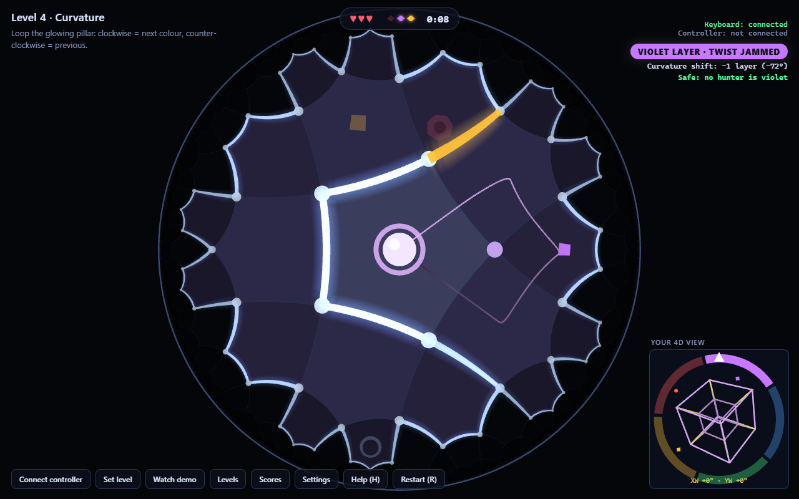
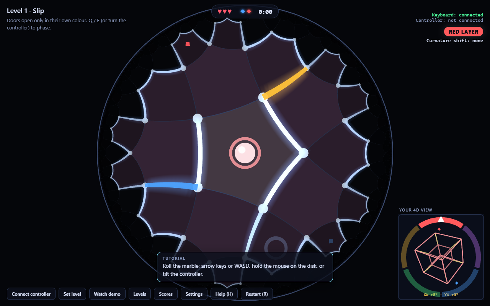
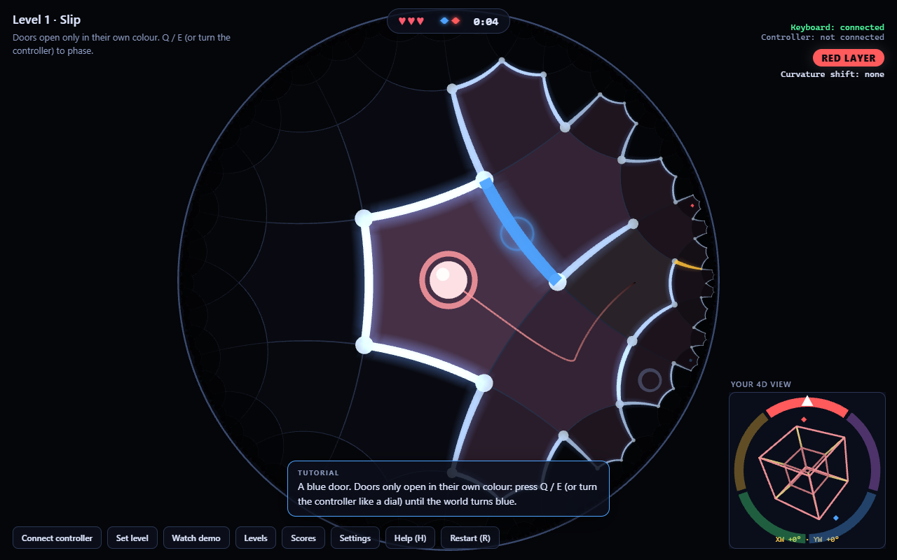
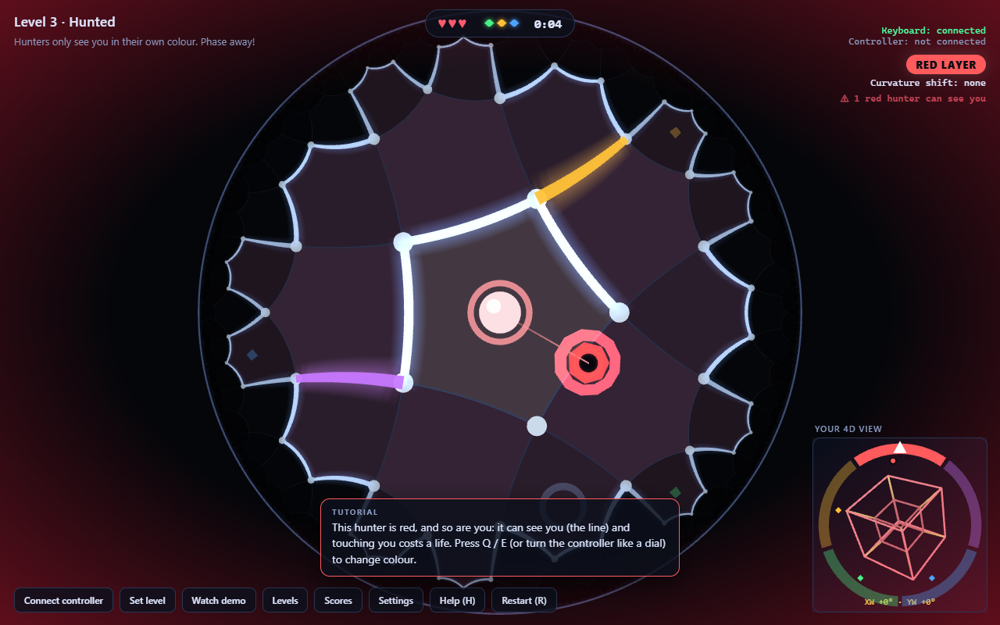
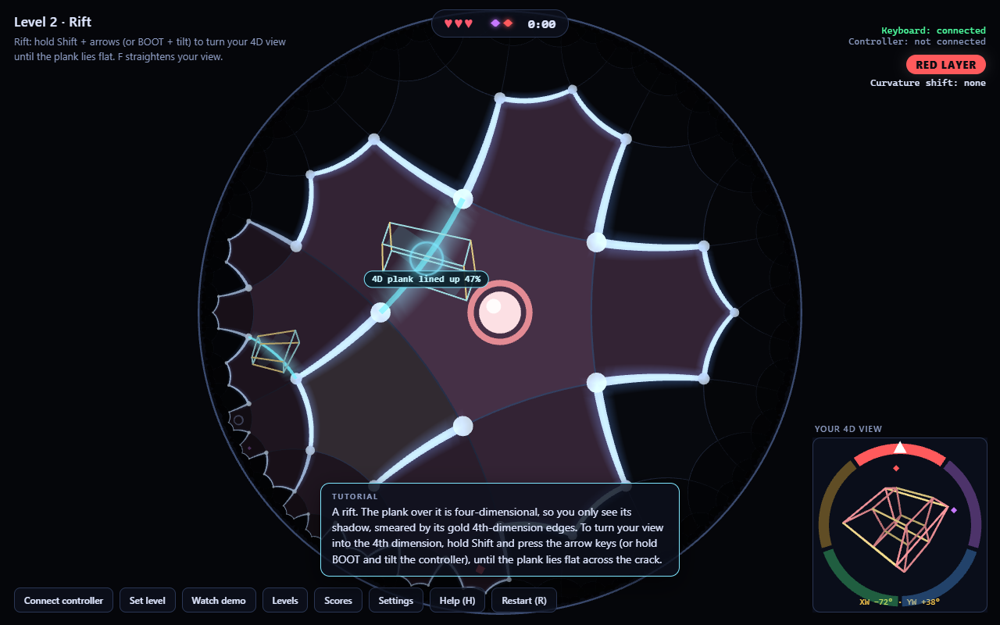
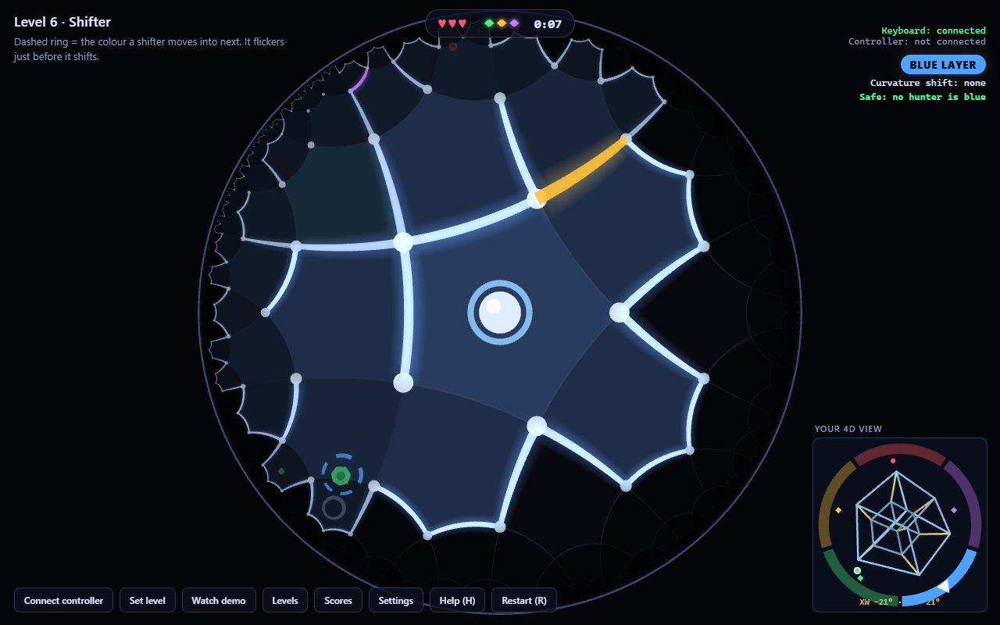
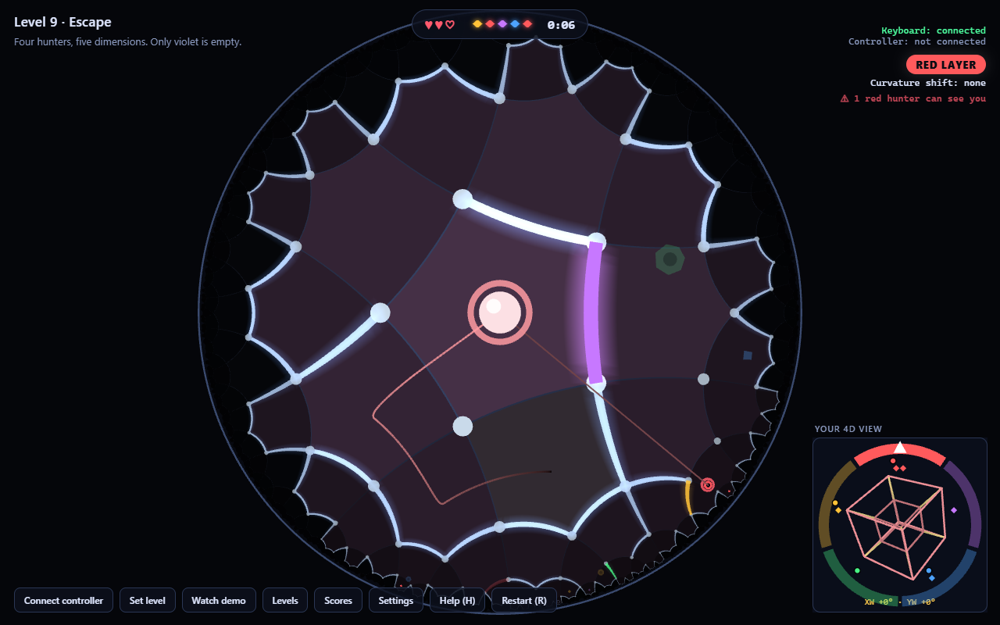

Phase Escape: StormHacks 2026







| Event | StormHacks 2026, “Beyond Euclid: Interactive Experiences in Impossible Geometries” |
|---|---|
| Result | 1st place, Huawei Beyond Euclid track |
| Game | TypeScript, Three.js, Vite, Web Audio; 143 automated tests |
| Controller | ESP32-DevKitC V4 + BNO055 orientation sensor, 4 × AA |
| Link | Bluetooth Low Energy or USB, 100 Hz |
| Firmware | C++, Arduino on PlatformIO, NimBLE |
| Runs on | Chrome / Edge in the browser, or a Windows desktop app (Electron) |
Overview
The StormHacks challenge was to build an interactive experience where impossible geometry isn't decoration, it has to change how you play. Phase Escape is a chase through a maze in curved space with a fourth dimension. You are a marble rolling through pentagonal rooms on the hyperbolic plane, and you can play it by tilting a wireless controller I built.
The maze has five layers, each with its own colour. Doors only open in their own colour, shards can only be picked up in their own colour, and hunters can only see and hit you while you are in their layer. When one closes in, you phase out. Collect every shard, reach the portal, and don't get caught three times.
The Geometry Is the Game
The rooms form a {5,4} tiling: pentagons with four meeting at every corner, which can't fit on a flat floor. The four rooms around a pillar make a square with 72° corners instead of 90°, so rolling once around it turns you 108° at each corner, 432° in all. That extra 72° is holonomy, and it is exactly one of the five colour layers, so space itself moves you through the fourth dimension. On some levels you can't change colour any other way.
A tesseract in the corner is your view into the fourth dimension. Some passages are blocked by rifts with a 4D plank above them; you only see its shadow, and turning your view in the XW and YW planes slides it until it lies flat and becomes a bridge.
The Controller
The controller is an ESP32 with an Adafruit BNO055 orientation sensor, running on four AA batteries. It streams gravity and gyro readings at 100 Hz over Bluetooth Low Energy, or over USB when plugged in. Tilting rolls the marble, turning it like a dial phases between layers, and holding the BOOT button while tilting turns your 4D view. Calibration is saved in flash so it is ready as soon as it powers on.
Challenges
- Fun before maths: the first version had you rotate a 4D key to fit a lock. Playtesting showed it was vague and had no way to lose, so I rebuilt it as a chase with hunters, lives and a timer.
- Making curvature fair: measuring the marble's wobbly path gave noisy angles. Carrying your orientation from room centre to room centre makes every pillar lap exactly 72°, every time.
- Hardware: the sensor sometimes failed on first boot until I added a clock-settle delay, and Bluetooth searches on Windows failed silently until I added a search indicator, a timeout and a retry.
- Working with AI: I directed Claude Code, read what it wrote, and relied on 143 automated tests to catch mistakes, including a bug that froze the game when a hunter lost sight of you.
Results
Nine levels, three with tutorial tips, running at 60 FPS. A solver proves every level can be finished, and an autopilot then plays each one start to finish with the real physics. Every layer has its own chord in the live-synthesized music, so phasing changes the harmony.
Links
- Play it online (Chrome or Edge)
- GitHub repository